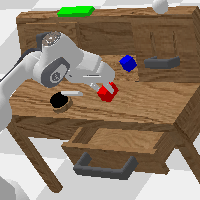
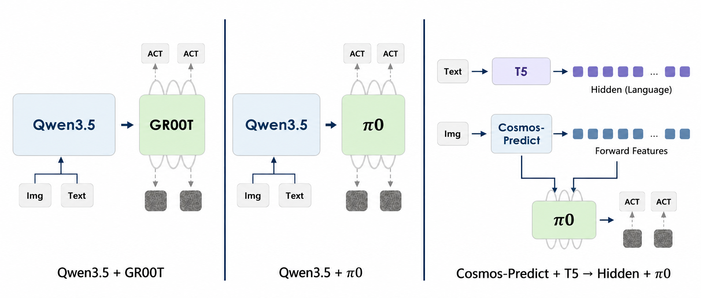
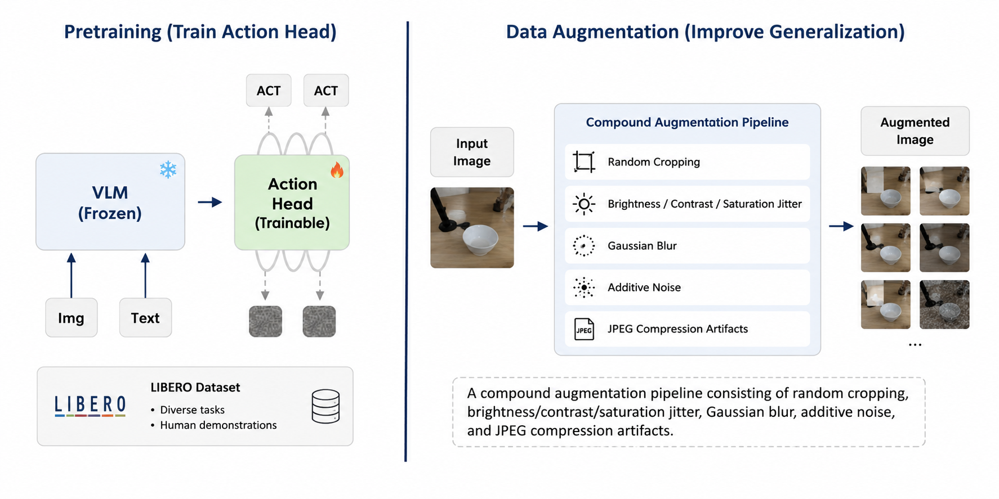
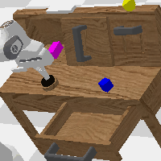
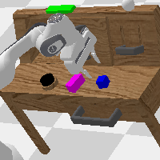
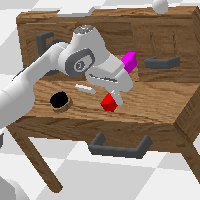
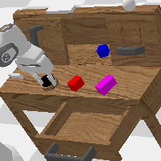
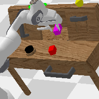

+0.343
Strong Augmentation Gain
GR00T improves from 1.824 to 2.167 average chain length, and SR@5 rises from 14.5% to 19.3%.
visual shiftABC->D
A StarVLA-based CALVIN ABC->D package aligned with our paper draft: baseline ablations, push-skill failure diagnosis, progress-aware remedies, rollout visualization, and reproducible training/evaluation scripts.

All numbers below are from docs/eval_runs_summary.md. The best 1000-sequence CALVIN ABC->D run is the MoT/state-fix variant, reaching 24.5% full-chain success and 2.380 average chain length.
| Model | #Seq | SR@1 | SR@2 | SR@3 | SR@4 | SR@5 | Avg. Chain |
|---|---|---|---|---|---|---|---|
| Qwen3.5-4B+GR00T (no aug) | 1000 | 69.5% | 45.7% | 31.7% | 21.0% | 14.5% | 1.824 |
| Qwen3.5-4B+PI | 1000 | 62.6% | 41.1% | 26.3% | 17.2% | 11.8% | 1.590 |
| Qwen3.5-4B+GR00T (strong aug) | 1000 | 75.2% | 54.0% | 39.3% | 28.9% | 19.3% | 2.167 |
| Qwen3.5-4B+GR00T+MoE | 1000 | 72.1% | 49.4% | 33.9% | 22.8% | 15.0% | 1.932 |
| Cosmos-Predict2-2B+PI | 1000 | 36.0% | 11.2% | 3.0% | 0.5% | 0.1% | 0.508 |
| Cosmos-Predict2-2B+PI+flare | 1000 | 41.6% | 14.8% | 3.7% | 1.5% | 0.6% | 0.622 |
| Qwen3.5-4B+GR00T+MoT | 1000 | 77.3% | 57.5% | 44.5% | 34.2% | 24.5% | 2.380 |
The comparison shows three clear trends: Qwen3.5-based VLA routes outperform the current Cosmos-PI routes; strong augmentation improves GR00T substantially; the MoT/state-fix variant gives the best long-chain result.
GR00T improves from 1.824 to 2.167 average chain length, and SR@5 rises from 14.5% to 19.3%.
The strongest run reaches 2.380 average chain length and 24.5% full five-task success over 1000 sequences.
Qwen3.5+PI reaches 1.590 average chain length, while the GR00T family and MoT variant remain stronger on continuous CALVIN control.
The framework diagrams summarize the baseline routes and the two main training levers: action-head pre-training and visual augmentation.


The best 1000-sequence MoT run was logged as result JSONs, while these videos come from the available GIF-logging evaluation run. They are used as qualitative success/failure examples for the same CALVIN ABC->D setting.

A contact-rich push succeeds when the object and drawer state provide enough progress signal.

Grasping and lifting are more visually grounded than subtle push progress.

Articulated-object tasks often expose clearer visual milestones.
Precise placement example from the saved rollout assets.

Representative high-leverage failure family: contact happens but completion is ambiguous.

Stacking illustrates accumulated pose error in long-horizon chains.
The worst primitive actions are dominated by push and rotation tasks. The best MoT run improves overall chain length, but push actions remain the key bottleneck.
| Model | Worst action 1 | Worst action 2 | Worst action 3 | Worst action 4 | Worst action 5 |
|---|---|---|---|---|---|
| GR00T (no aug) | push_pink_block_left 15.2% | rotate_pink_block_right 16.1% | rotate_red_block_left 16.4% | push_red_block_right 21.9% | move_slider_left 28.7% |
| Qwen3.5+PI | move_slider_left 4.2% | rotate_pink_block_right 12.5% | push_pink_block_left 16.1% | push_red_block_right 23.7% | rotate_pink_block_left 26.2% |
| GR00T (strong aug) | push_pink_block_left 14.7% | push_red_block_right 23.1% | rotate_pink_block_left 23.4% | push_pink_block_right 29.3% | push_blue_block_left 30.0% |
| GR00T+MoE | move_slider_left 18.5% | push_pink_block_left 19.0% | push_red_block_right 28.8% | push_blue_block_left 31.0% | rotate_pink_block_left 31.9% |
| Cosmos+PI | push_blue_block_right 0.0% | push_pink_block_right 0.0% | lift_pink_block_drawer 0.0% | rotate_pink_block_right 2.3% | lift_red_block_slider 2.4% |
| Cosmos+PI+flare | lift_blue_block_slider 0.0% | push_blue_block_right 0.0% | push_red_block_right 2.2% | lift_red_block_slider 2.6% | push_pink_block_right 2.9% |
| GR00T+MoT | push_pink_block_left 17.6% | push_red_block_right 23.4% | push_blue_block_right 28.1% | push_pink_block_right 31.0% | rotate_pink_block_left 31.2% |
Progress awareness is the missing signal: push tasks change the scene gradually, so the policy can touch the block but still fail to know whether the subtask has advanced enough.
Run training, evaluation, and aggregation from the repository root. We tested two Qwen3.5 action heads: PI-style unified action prediction and GR00T-style continuous action prediction.
| Action head | Train | Evaluate | Reported result root |
|---|---|---|---|
| Qwen3.5 + PI | bash examples/calvin/train_files/run_calvin_train.sh | bash examples/calvin/eval_files/run_calvin_eval_8gpu_pi_abc_d_steps30000.sh | results/calvin_eval/qwen35vl4b_pi_calvin_abc_d_steps_30000_pytorch_model_multigpu_20260519_070133 |
| Qwen3.5 + GR00T | bash examples/calvin/train_files/run_calvin_train_qwen35_gr00t.sh | bash examples/calvin/eval_files/run_calvin_eval_multigpu_local.sh | results/calvin_eval/baseline_strong_aug_steps30000_statefix1000_multigpu_20260520_031141 |
| Aggregate | python examples/calvin/eval_files/aggregate_calvin_results.py --eval-root ... | Average chain length and SR@1-5 success rates | |
# Train and evaluate the Qwen3.5-PI action head
bash examples/calvin/train_files/run_calvin_train.sh
bash examples/calvin/eval_files/run_calvin_eval_8gpu_pi_abc_d_steps30000.sh
# Train the main Qwen3.5-GR00T action head
bash examples/calvin/train_files/run_calvin_train_qwen35_gr00t.sh
# Run local multi-GPU ABC->D evaluation
bash examples/calvin/eval_files/run_calvin_eval_multigpu_local.sh
# Aggregate saved worker results
python examples/calvin/eval_files/aggregate_calvin_results.py \
--eval-root results/calvin_eval/baseline_strong_aug_steps30000_statefix1000_multigpu_20260520_031141
python examples/calvin/eval_files/aggregate_calvin_results.py \
--eval-root results/calvin_eval/qwen35vl4b_pi_calvin_abc_d_steps_30000_pytorch_model_multigpu_20260519_070133